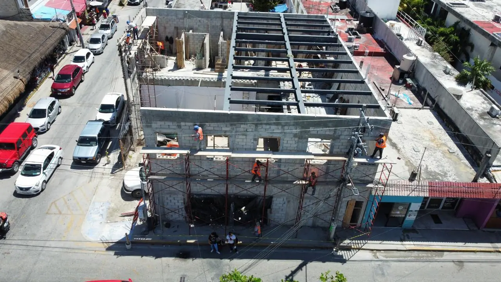

Tramitamos los permisos de construcción en Puerto Cancún de principio a fin ante Dirección General de Desarrollo Urbano de Benito Juárez, con visto bueno previo del desarrollo: uso de suelo, licencia, DRO y servicios. Aquí el expediente incluye además la concesión ZOFEMAT y el dictamen del comité del desarrollo. Usted no pisa una ventanilla; nosotros entregamos el expediente firmado.

Verificamos densidad, uso de suelo y restricciones en Puerto Cancún antes de proyectar: en Benito Juárez la constancia se emite por predio y es el primer filtro real.
Ingresamos y damos seguimiento a la licencia ante el municipio hasta obtener la resolución.
Un DRO con licencia activa firma y responde legalmente por la obra y el cumplimiento del reglamento.
En Puerto Cancún hay frente federal: la concesión ZOFEMAT se tramita aparte de la licencia y se paga cada año. La gestionamos junto con el expediente municipal.
Visto bueno de Protección Civil, factibilidad de CFE y agua, y el dictamen del comité o la administración del desarrollo, que en Puerto Cancún se pide antes del municipio.
Le entregamos todo el expediente ordenado: planos sellados, licencias, DRO y autorizaciones.
Puerto Cancún es un desarrollo de marina con frente de agua, y eso duplica la ventanilla: además del expediente municipal de Benito Juárez, el borde del canal, los muelles y cualquier obra sobre el agua caen en concesión federal y en el reglamento interno del desarrollo. El visto bueno del comité de diseño se pide antes de ingresar al municipio, no después.
El retraso típico aquí viene del orden de los trámites. Quien ingresa primero al ayuntamiento y luego al comité suele tener que corregir fachada, alturas o paleta de materiales y volver a ingresar, perdiendo el turno de revisión.
El retraso típico aquí viene del orden de los trámites. Quien ingresa primero al ayuntamiento y luego al comité suele tener que corregir fachada, alturas o paleta de materiales y volver a ingresar, perdiendo el turno de revisión.
Guías útiles: Permisos y licencias (Riviera Maya) · Gestoría y trámites · Topografía y planos · Construcción de casas en Puerto Cancún
Tramitamos permisos en Puerto Cancún y toda la Riviera Maya: Tulum, Playa del Carmen, Cancún, Puerto Aventuras, Akumal y Puerto Morelos.
"Recrea nos consiguió todos los permisos en Puerto Cancún sin que tuviéramos que pisar el municipio. Expediente completo y obra en tiempo."
Propietario, Puerto Cancún
"Nos ahorraron meses de vueltas. Uso de suelo, licencia y DRO resueltos, todo en regla."
Inversionista, Puerto Cancún
En Puerto Cancún el trámite tiene dos carriles y el orden importa. El comité de diseño del desarrollo emite su dictamen sobre altura, niveles, retiros, paleta de fachada, ubicación de equipos y arbolado; ese dictamen conviene tenerlo antes de ingresar el expediente en Benito Juárez, porque un proyecto aprobado por el municipio y rechazado por el comité se vuelve a dibujar completo. Sume de cuatro a ocho semanas de revisión interna y una fianza de obra —habitualmente de 50,000 a 150,000 MXN— que se recupera tras la inspección de salida, junto con el acta de estado de vialidades firmada antes de empezar.
Los lotes con frente de canal o marina añaden trámites que no aplican tierra adentro: cualquier intervención sobre el borde del canal, muro de contención, escollera o muelle tiene procedimiento propio y, según el caso, revisión ambiental. Antes de proyectar terrazas volando sobre el agua conviene verificar por escrito qué está permitido en ese frente concreto. En lotes con frente de golf, el retiro obligado y las servidumbres de paso y mantenimiento del campo se revisan en el mismo dictamen del comité. Nada de esto impide construir, pero todo ello se calendariza en paralelo a la licencia municipal, no después de obtenerla.
No hay un trámite único para la Riviera Maya. En Puerto Cancún la autoridad competente es el municipio de Benito Juárez, el régimen ambiental es municipal + ZOFEMAT en frente de marina, y eso define qué documentos entran al expediente y en qué orden.
El nivel freático junto al canal es alto y la exposición salina en la dársena es severa. Eso no es un detalle estético: la memoria de cálculo que acompaña la licencia tiene que justificar recubrimientos y anclajes, y el revisor municipal lo pide.
El suelo es caliza y arena y el nivel freático es alto junto al canal, lo que pesa en el estudio de mecánica de suelos que acompaña la solicitud de licencia. El acceso es acceso controlado con registro y el régimen del desarrollo, reglamento del desarrollo, comité de diseño.
Con el expediente completo y bien armado, cuente 6 a 12 meses: la resolución ambiental federal marca el inicio; el expediente municipal corre después de ella.
Nosotros armamos el expediente en el orden que impone el desarrollo: comité primero, concesión de borde si el proyecto toca el agua, y municipio al final con todo firmado. Es la diferencia entre una revisión y tres.
Lo que decide el proyecto aquí: desarrollo de marina con frente de agua: el borde del canal y los amarres tienen trámite propio además del municipal
Puede revisar y comparar estos datos con otras zonas en el verificador de zona.
El visto bueno del comité de diseño del desarrollo, acompañado del deslinde del borde de agua. El comité revisa volumetría, fachada y materiales, y el municipio pide ese dictamen dentro del paquete. Si además el proyecto toca el canal —muelle, escollera, muro de contención de borde— se abre un trámite de concesión aparte, con su propio plano y su propia memoria. Cada uno corre a su ritmo y ninguno espera al otro, de modo que la fecha de inicio real la marca el más lento de los tres, no la licencia municipal.
Las dos comparten la lógica de marina, pero Puerto Cancún está dentro de Benito Juárez y se lee sobre la planeación urbana de Cancún, con su comité de diseño exigente y su reglamento interno. Puerto Aventuras pertenece a Solidaridad y su fricción principal es operativa: accesos, horarios y cuotas. En Puerto Cancún el proyecto se gana o se pierde en la revisión de fachada; en Puerto Aventuras, en la coordinación diaria de la obra.
Uso de suelo + licencia + DRO + autorizaciones especiales, llave en mano. Respuesta en 2 minutos.
Cotizar por WhatsAppSu opinión ayuda a otros propietarios a decidir, y a nosotros a mejorar.
Escribir una reseñaVer reseñas en Google